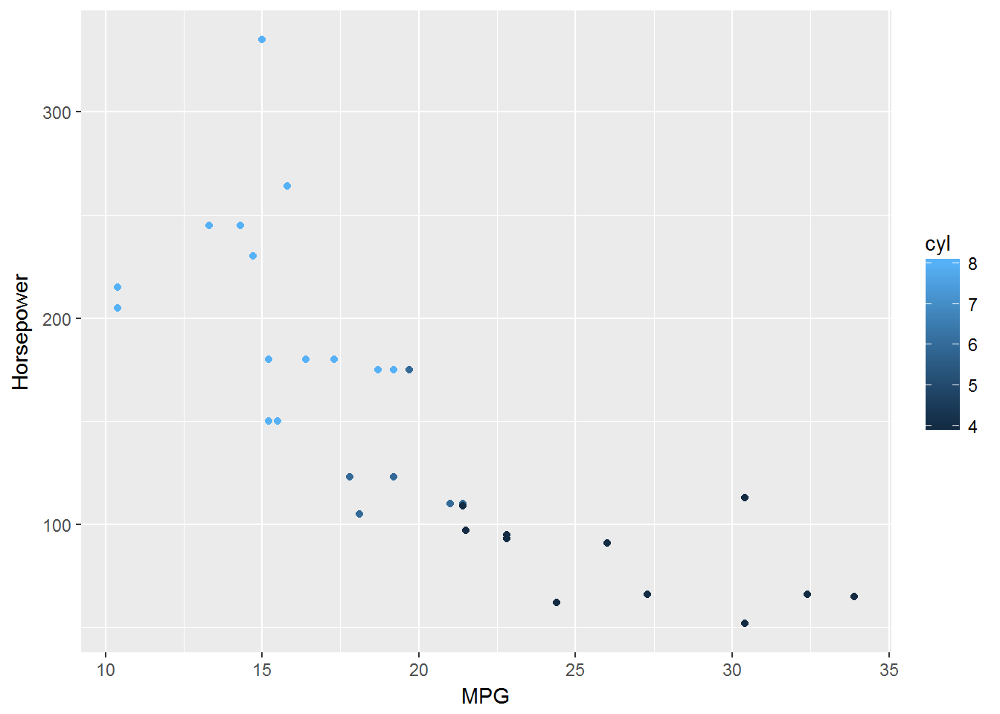

Second New Post (in R Markdown)
June 5 2017
Second New Post (R Markdown)
This is my second post but my first R Markdown.
mtCars Data Analysis
This plot shows the relation between Horsepower and Miles per Gallon. The number of cylinders in the car is denoted by color. As you can see, there is a significant downward trend. As the amount of horsepower and the number of cylinders go down, the number of miles to the gallon goes up.

Iris Data Analysis